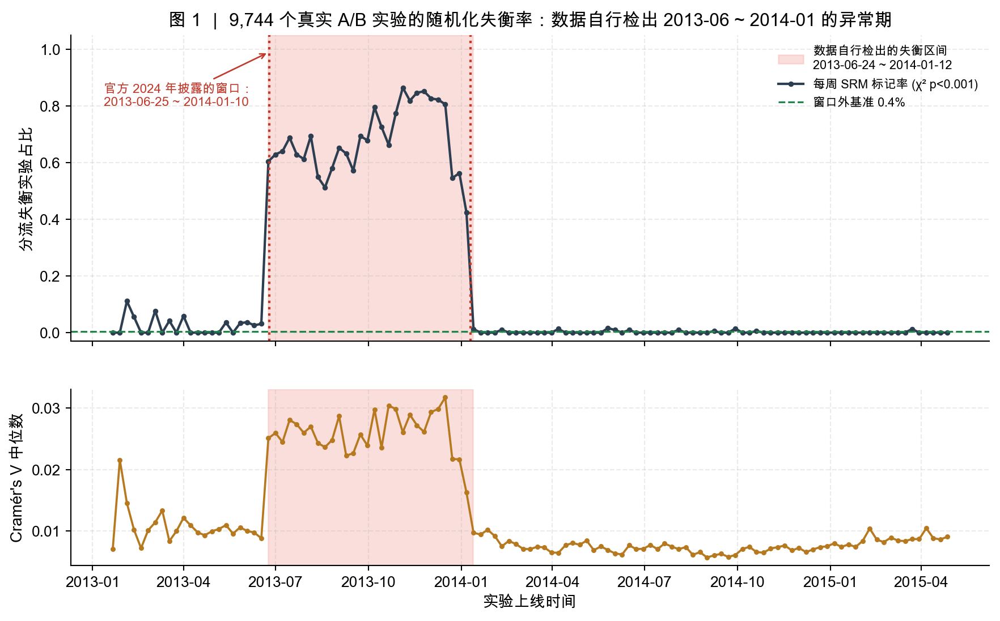
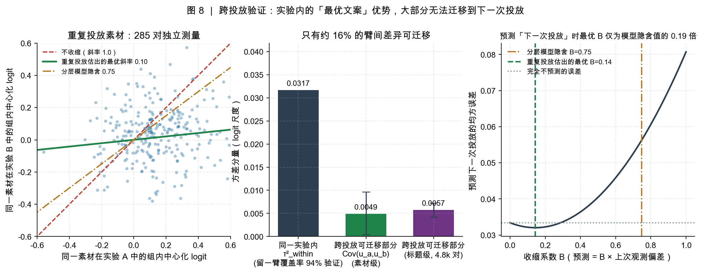
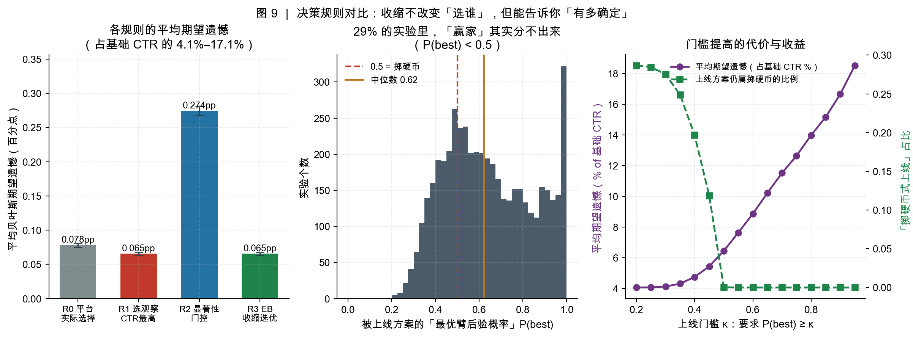
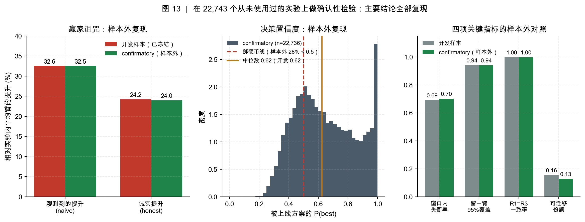

Data Science · Causal Inference · Decision Analysis
基于 32,485 个真实 A/B 实验（150,815 个实验臂 / 5.38 亿次曝光），审计一件很少被审计的事：实验赢了，到底该不该上线？
Decision Audit of Online Experiments — Randomization Integrity, Winner's Curse and Cross-Deployment Transferability
平台以为赢了的方案，有 28.7% 其实根本分不出来；而赢到的优势，只有 15.5% 能迁移到下一次投放。
全部结论可在本仓库一键复现（python -m src.run_all，约 45 秒）。
仅用曝光分配数据做卡方检验 + 似然比区间扫描，自行定位出平台历史上的随机化故障窗口 2013-06-24 ~ 2014-01-12，与官方 2024 年事后披露的窗口相比精确率 98.5%、召回率 100%。
τ² = 0.052，真实点击率的 90% 区间为 1.04%–2.18%；留一臂后验预测的 95% 区间实测覆盖率 94.1%（名义 95%），说明后验方差没有被高估或低估。
平台会汇报的提升是 +32.6%，甚至高于“事后知道哪个方案最好”的 +29.4%；被选中方案的真实提升只有 +24.2%。观测值里约 4.4% 是选择偏差。
用被重复投放的素材做天然重复测量：实验内的臂间优势只有约 15.5% 能复现到下一次投放。预测下一次投放的最优收缩系数是 0.14，仅为分层模型隐含值 0.75 的 1/5。
经验贝叶斯选择与“取最高点击率”在 99.84% 的实验里结论完全相同。真正的问题是置信度：被上线方案的“最优臂后验概率”中位数仅 0.62，28.7% 的实验低于 0.5——等于掷硬币，而平台全部上线了。
四项可证伪检验（过度离散、效应量、剂量反应、决策质量）均未发现失衡实验有实质危害，而丢弃的代价是照旧分析的 6.5 倍（约 2,520 万次曝光）。
完整 13 张图与技术报告见页面底部链接。




P(最优臂) 保留臂间相关性，E[p|data] 用 Gauss–Hermite 积分而非 logistic(E[θ])。SS_within = τ²·dof + Σ(1−1/k)v，把臂级变异严格拆成“真实文案差异 62.8% + 抽样噪声 37.2%”。E[max p] ≥ max E[p]、收缩极限行为。# 依赖：Python 3.10+，仅需 numpy / pandas / scipy / matplotlib git clone git@github.com:gongsjie3-cyber/ab-decision-audit.git cd ab-decision-audit python -m pip install -r requirements.txt python scripts/fetch_data.py # 下载并校验数据（约 95 MB） python -m src.run_all # 全流程，约 45 秒
全流程结束后，所有关键指标汇总在 results/99_headline.json，图在 figures/。全新克隆实测：130 项指标与作者本地逐位一致。